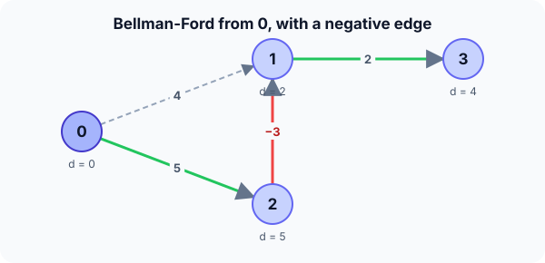

Prerequisites
- Dijkstra's algorithm and edge relaxation.
- Directed weighted graphs as an edge list.
- Cycles in a graph.
The analogy
Everyday analogy
Imagine a rumour about the cheapest bus fare spreading through a town. Every day, everyone tells their neighbours "you can get here from me for my price plus the fare".
After enough days, everyone knows their true cheapest fare. A path uses at most $V - 1$ edges, so $V - 1$ rounds of gossip are always enough, unless prices keep dropping forever, which means a negative cycle.
How it works
Precondition: negative edge weights are allowed, but no negative cycle may be reachable from the start; the algorithm detects one if it exists.
Start with one round by hand
Edges in this order: (0→1, 4), (0→2, 5), (2→1, −3), (1→3, 2). Start: dist = [0, ∞, ∞, ∞]. Relax every edge in order. Predict, then open "Check".
Example: predict before you read
Step 1. Relax 0→1 and 0→2. Predict the distances.
Check
dist[1] = 4, dist[2] = 5.
Step 2. Cover the next line and guess: relax 2→1 (weight −3). Does dist[1] change?
Check
Yes: 5 − 3 = 2 < 4, so dist[1] = 2.
Step 3. Relax 1→3. Then predict whether round 2 changes anything.
Check
dist[3] = 2 + 2 = 4. Round 2 changes nothing: dist = [0, 2, 5, 4] is final.

Quick recall: Before reading further, cover the text above and say out loud: why does Bellman-Ford handle negative edges when Dijkstra doesn't?
Check your answer
It never declares a distance final early; it keeps relaxing every edge, so a later negative edge can still improve any distance.
Finish the picture: a negative cycle
Add the edge 1 → 2 with weight 1. Now 1 → 2 → 1 costs 1 − 3 = −2.
- Going round the cycle. Predict what happens to dist[1] each time you go round.
Check
It drops by 2 each lap: 2, 0, −2, … There is no shortest path; it goes to −∞.
- The extra round. Predict the output of the check after $V - 1$ rounds.
Check
Some edge (for example 2 → 1) can still be relaxed, so the algorithm reports a negative cycle.
Quick recall: Without scrolling up, say out loud: how does the algorithm detect a negative cycle?
Check your answer
After $V - 1$ rounds, it relaxes all edges once more. If any distance still improves, a negative cycle must exist.
The rule in plain words
Set dist[source] = 0, others ∞. Do $V - 1$ rounds; in each round, relax every edge $u \to v$: if dist[u] + w < dist[v], update dist[v].
Then do one more pass. If anything still improves, report a negative cycle.
Quick recall: Before you read the code, write the algorithm in your own words. Then check below.
Check your answer
1. Start with 0 for the source and ∞ elsewhere. 2. Repeat $V - 1$ times: relax every edge. 3. Relax every edge once more; any improvement means a negative cycle.
The code
Read this code after you have done a round by hand. It will make more sense.
int bellman_ford(int n, int m, int eu[], int ev[], int ew[], int s, int dist[]) {
for (int i = 0; i < n; i++) dist[i] = INT_MAX;
dist[s] = 0;
for (int round = 1; round < n; round++) /* n - 1 rounds */
for (int j = 0; j < m; j++) /* relax every edge */
if (dist[eu[j]] != INT_MAX && dist[eu[j]] + ew[j] < dist[ev[j]])
dist[ev[j]] = dist[eu[j]] + ew[j];
for (int j = 0; j < m; j++) /* one more round */
if (dist[eu[j]] != INT_MAX && dist[eu[j]] + ew[j] < dist[ev[j]])
return 0; /* still improving: negative cycle */
return 1; /* distances are final */
}Definition
What you just did, in one line: the Bellman-Ford algorithm computes single-source shortest paths by relaxing every edge $V - 1$ times; it allows negative edges and detects negative cycles.
flowchart TD
A["dist[s] = 0, others infinity"] --> B["relax every edge"]
B --> C{"done V - 1 rounds?"}
C -->|no| B
C -->|yes| D{"can any edge still be relaxed?"}
D -->|yes| E["report a negative cycle"]
D -->|no| F["distances are shortest paths"]
How fast is it?
Quick recall: Before looking at the formula, predict: why exactly $V - 1$ rounds?
Check your answer
A shortest path without cycles has at most $V - 1$ edges, and round $k$ guarantees all shortest paths with up to $k$ edges are found.
There are $V - 1$ rounds, and each round relaxes all $E$ edges:
$$(V - 1) \cdot E \;=\; O(VE)$$That's slower than Dijkstra's $O((V + E) \log V)$, the price of allowing negative edges. You can stop early if a round changes nothing.
| Measure | Cost | Why |
|---|---|---|
| Time | $O(VE)$ | $V - 1$ rounds of $E$ relaxations |
| Negative-cycle check | $O(E)$ | One extra round |
| Extra space | $O(V)$ | One distance per vertex |
| Negative edges | Allowed | No distance is final until the end |
Warning
A negative cycle only matters if it is reachable from the source. The check above skips unreachable vertices (dist = ∞), so a negative cycle elsewhere in the graph is ignored, which is correct for single-source distances.
Exam tip
Two facts to state: "$V - 1$ rounds because a simple path has at most $V - 1$ edges", and "an improvement in round $V$ proves a negative cycle".
Common mistakes
- Running only one round and assuming it is enough (it was here only because the edge order was lucky).
- Adding to ∞ (
INT_MAX + w) for unreachable vertices, which overflows in C. - Forgetting the negative-cycle check and reporting meaningless distances.
Try it yourself
Exercise 1 (warm-up)
Relax the same four edges in reverse order: (1→3, 2), (2→1, −3), (0→2, 5), (0→1, 4). What are the distances after round 1?
Hint
Edges from unreachable vertices do nothing yet.
Answer
After round 1: dist = [0, 4, 5, ∞]. 1→3 and 2→1 fired while 1 and 2 were still ∞. Round 2 gives dist[3] = 6 (from the old dist[1]) and then dist[1] = 2; round 3 lowers dist[3] to 4. Edge order changes how many rounds you need, not the answer.
Exercise 2 (a bit harder)
Exchange rates: 1 USD → 0.9 EUR, 1 EUR → 0.8 GBP, 1 GBP → 1.4 USD. Using edge weights $-\log(\text{rate})$, is there an arbitrage cycle? Write your answer down before you open it.
Show answer
The product of rates round the cycle is 0.9 × 0.8 × 1.4 = 1.008 > 1, so you end with more money. In weights that's a sum of $-\log$ below 0: a negative cycle, which Bellman-Ford detects.
Did you know?
Did you know?
The algorithm is named after Richard Bellman and Lester Ford Jr., who published it in the 1950s; Bellman also invented dynamic programming.
Early Internet routing (RIP) used a distributed Bellman-Ford: each router tells its neighbours its distance table, exactly like the gossip analogy.
Key points to remember
If you remember one thing from each line, remember the because.
- It allows negative edges because no distance is declared final before all rounds are done.
- $V - 1$ rounds suffice because a shortest simple path has at most $V - 1$ edges.
- An improvement in round $V$ proves a negative cycle because without one, nothing can improve any more.
- It costs $O(VE)$ because every round relaxes every edge.
- Unreachable vertices are skipped because adding to ∞ is meaningless and overflows.
Self-check questions
Answer these in order, out loud. They follow the page, so your answers become the script of your video.
- How is Bellman-Ford like a rumour about cheap bus fares?
Sample answer
Each round, everyone tells their neighbours "you can reach this place through me for this price". After enough rounds, everyone knows their cheapest fare.
- Walk through round 1 on the edges (0→1, 4), (0→2, 5), (2→1, −3), (1→3, 2).
Sample answer
dist[1] = 4, dist[2] = 5, then 2→1 lowers dist[1] to 2, then dist[3] = 4. Final: [0, 2, 5, 4].
- Why does the code check
dist[eu[j]] != INT_MAXbefore relaxing?A good answer mentions overflow.
Sample answer
An unreachable vertex has distance ∞; adding a weight to
INT_MAXoverflows in C, and a path from an unreachable vertex is meaningless anyway. - So what is Bellman-Ford, in one sentence?
Sample answer
A shortest-path algorithm that relaxes every edge $V - 1$ times, handling negative edges and detecting negative cycles.
- Why are $V - 1$ rounds always enough without a negative cycle?
A good answer counts edges on a shortest path.
Sample answer
A shortest path never repeats a vertex, so it has at most $V - 1$ edges, and round $k$ fixes every shortest path that uses $k$ edges.
- What do Bellman-Ford and its negative-cycle check cost?
Sample answer
$O(VE)$ for the rounds plus $O(E)$ for the check; $O(V)$ extra space.
- When would you choose Bellman-Ford over Dijkstra?
Sample answer
When the graph has negative edges, or when you need to detect negative cycles, such as arbitrage. Otherwise Dijkstra is faster.
- If you had to teach this to a friend in 2 minutes, what would you leave out, and why?
Sample answer
I'd leave out the edge-order subtleties and the arbitrage example. I'd keep the gossip analogy, the round on the 4-vertex example, and "relax all edges $V - 1$ times, $O(VE)$, negative edges OK, detects negative cycles".
External resources
- VisuAlgo: Single-source shortest paths: choose Bellman-Ford and step through the rounds.
- GeeksforGeeks: Bellman-Ford: code with negative-cycle detection.
- Wikipedia: Bellman-Ford algorithm: proof and applications.
Videos
- YouTube search: Bellman-Ford explained: pick a walkthrough of the rounds.